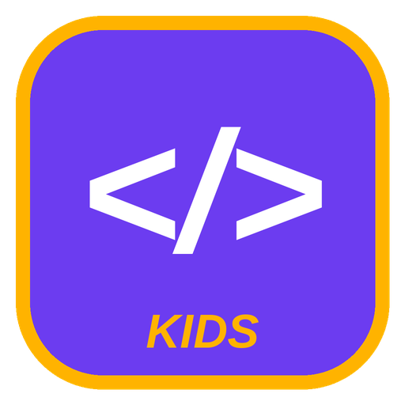

مبرمج أبوصيبع المحترف
CodeKids
تعلّم البرمجة بالعربي خطوة بخطوة: التفكير البرمجي، HTML، CSS، JavaScript، Python. اكتب الكود وشغّله، واحصل على شهادة لكل مرحلة.
مدرسة أبوصيبع الابتدائية للبنين
نتعلّم ونلعب ونحصل على الشهادات… من المدرسة أو من البيت، على الحاسوب والهاتف والآيباد.

CodeKids
تعلّم البرمجة بالعربي خطوة بخطوة: التفكير البرمجي، HTML، CSS، JavaScript، Python. اكتب الكود وشغّله، واحصل على شهادة لكل مرحلة.

Abusaiba Digital Guardians
مغامرة ممتعة لتعلّم الاستعمال الآمن للتكنولوجيا: كلمات السر، الخصوصية، كشف الخدع، مواجهة التنمّر الإلكتروني، وطلب المساعدة.
التثبيت يجعل التطبيق يفتح من أيقونة مثل أي تطبيق، ويحفظ تقدّمك. افتح التطبيق أولاً، ثم:
⚠️ تقدّمك يُحفظ على جهازك فقط. استعمل الجهاز والمتصفح نفسيهما دائماً، وأرسل كل شهادة تحصل عليها لمعلّمك من داخل التطبيق.